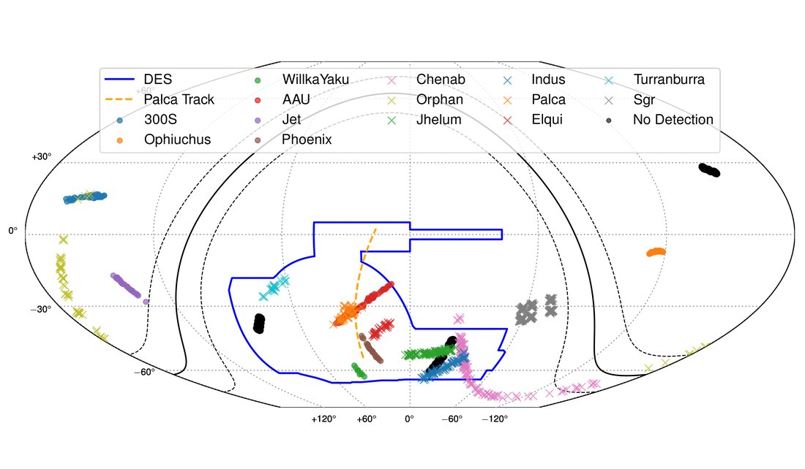
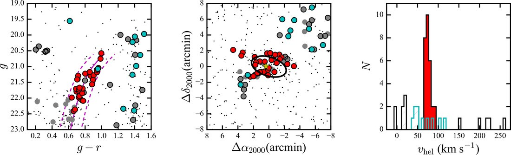
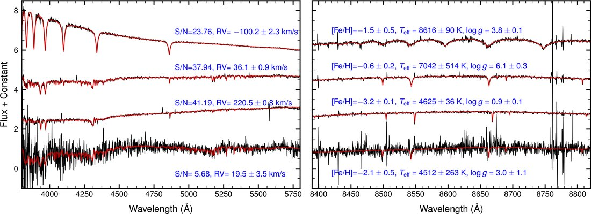
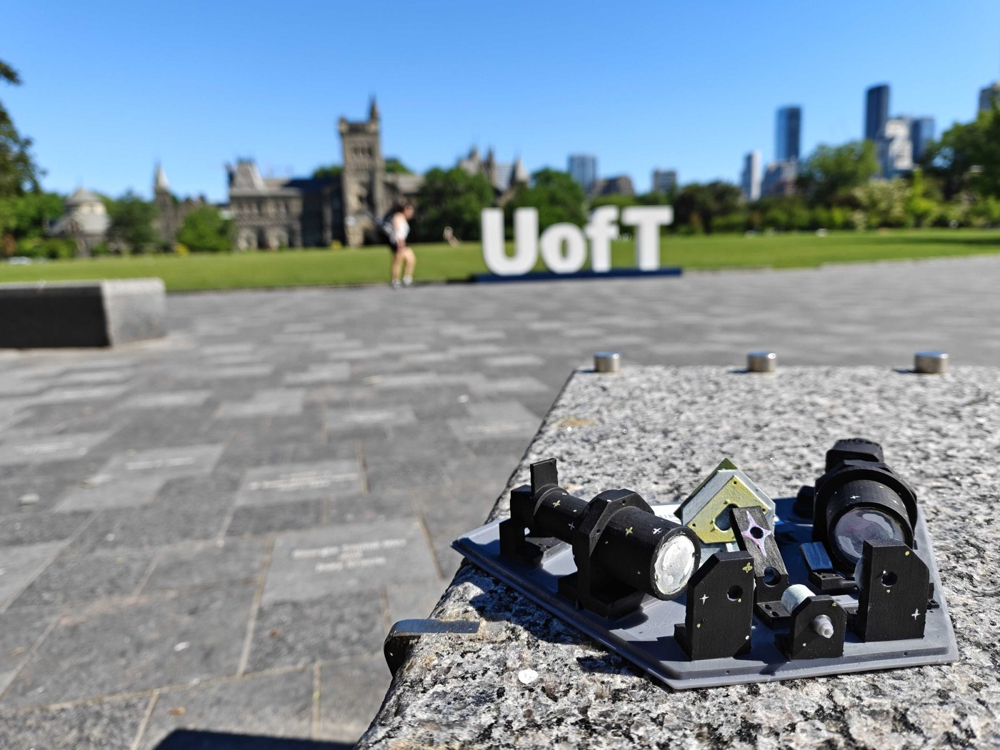

Research
My group combines wide-field imaging and spectroscopic surveys with deep, targeted follow-up observations to map the Milky Way and its satellites — and to use them as cosmological probes of dark matter.
Latest
Scrolls automatically — hover or scroll it yourself to take over.

Galactic archaeologyTidally disrupted star clusters and dwarf galaxies stretch into streams that record the Milky Way's gravitational field and accretion history. I founded and lead the Southern Stellar Stream Spectroscopic Survey (S5), mapping the 6D phase space and chemistry of streams across the southern sky.
On-sky map of a dozen S5 streams. Li et al. 2022
Near-field cosmologyThe faintest satellite galaxies are the most dark-matter-dominated systems known. Their internal kinematics and chemistry constrain both galaxy formation on the smallest scales and the particle nature of dark matter.
Members & velocities of the distant dwarf Eridanus II. Li et al. 2017
Survey scienceAs a builder of both the Dark Energy Survey (DES) and the Dark Energy Spectroscopic Instrument (DESI), and former chair of the DESI Milky Way Survey and DES Milky Way working groups, I help turn surveys of millions of stars into chemo-dynamical maps of the Galactic halo — with LSST and future facilities on the horizon.
Example S5 spectra and derived parameters. Li et al. 2019
InstrumentationI build the instruments that make these surveys possible — from DESI's focus-and-alignment system to DMD-MOS, a student-driven multi-object spectrograph prototype now commissioned on sky, novel detectors, and a Canadian contribution to the ANDES instrument for the ELT.
The DMD-MOS prototype on the UofT campus. DMD-MOS project pageWhere the data comes from
My science is built on the world's major sky surveys, several of which I help lead.
Read more
A full, up-to-date publication list lives on my publications page, with links to ADS and Google Scholar. For the full record of grants, service, and observing experience, see my CV.
Recorded talks:
New to the field? Good places for students to start: